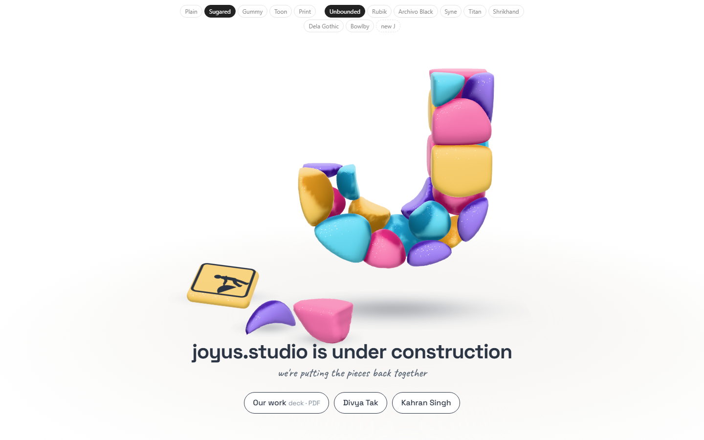
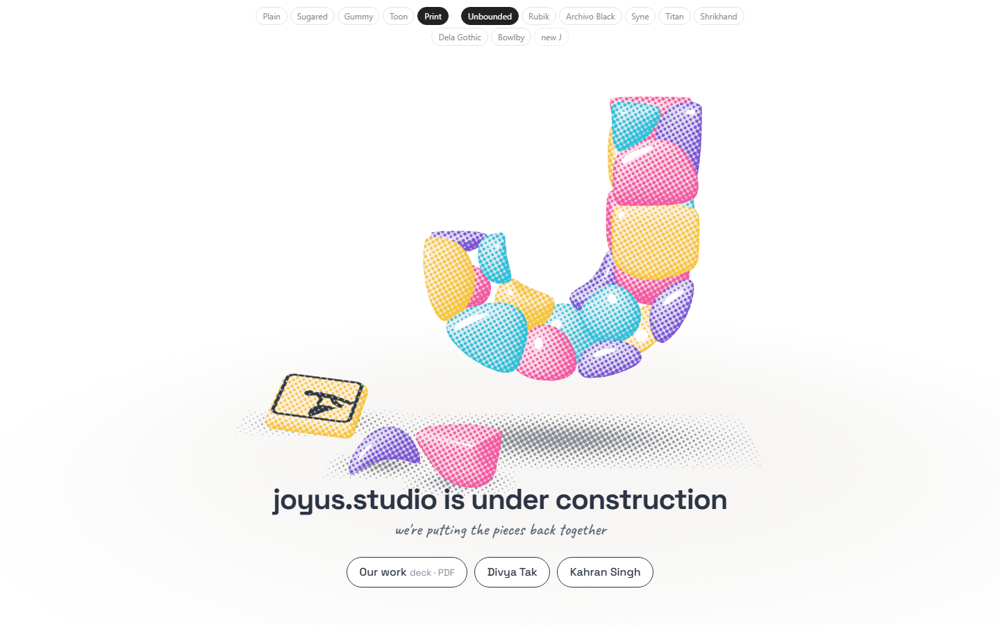
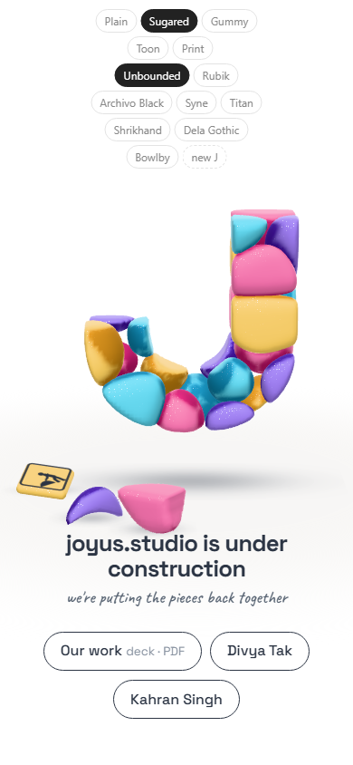
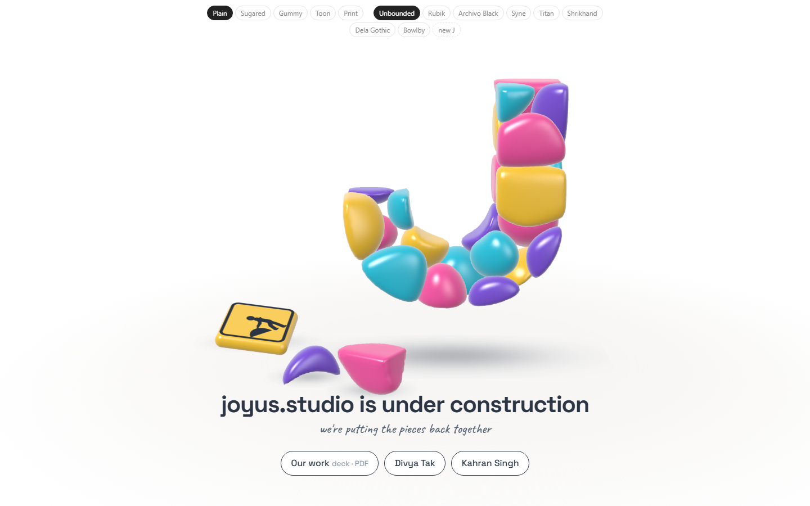
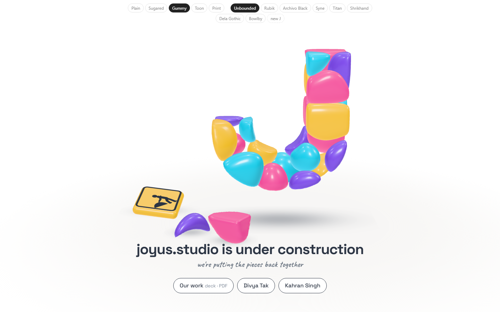
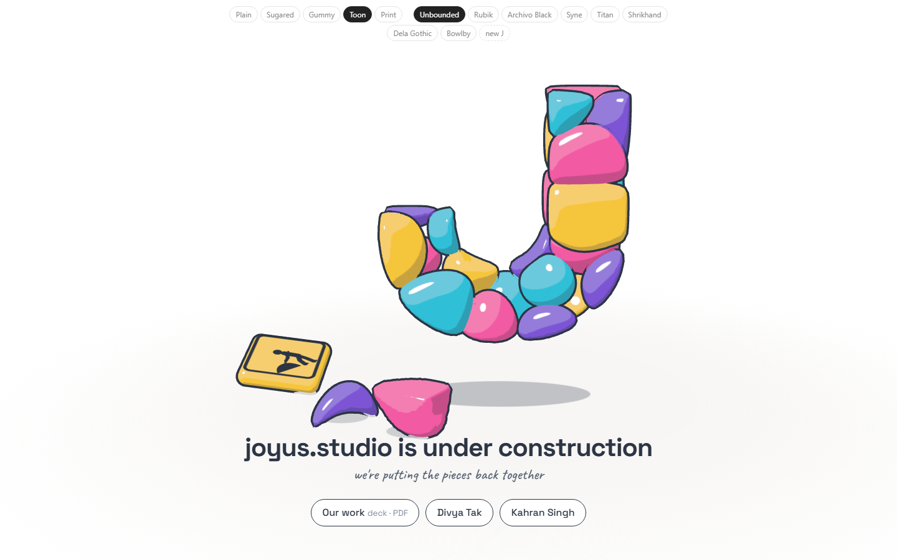

Study 26 · 6 October 2026
Lying down
The sign lies on the floor behind the fallen stones. Other placements gone; fonts and looks kept.
Open the page (fonts and looks at the top)


Looks



Open
- Font? Look?
- Deck link, your site's address, homepage only or every page.
"new J" at the top reloads with a new random seed: a differently built J. Test: page-test.mjs, 54 checks in a browser; read by check.cjs.